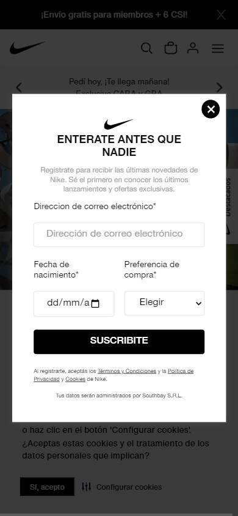
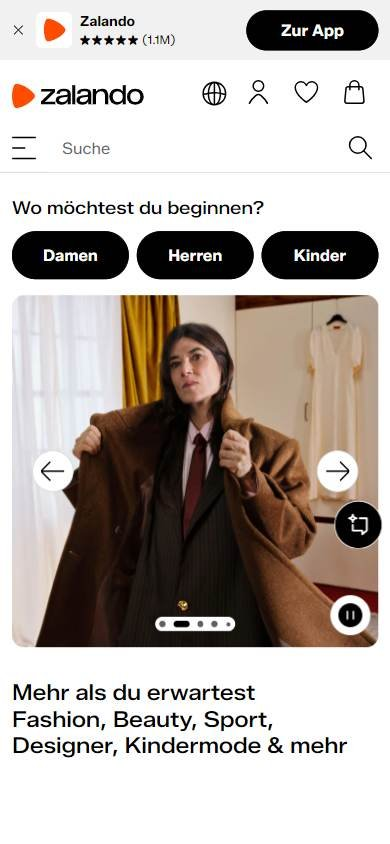
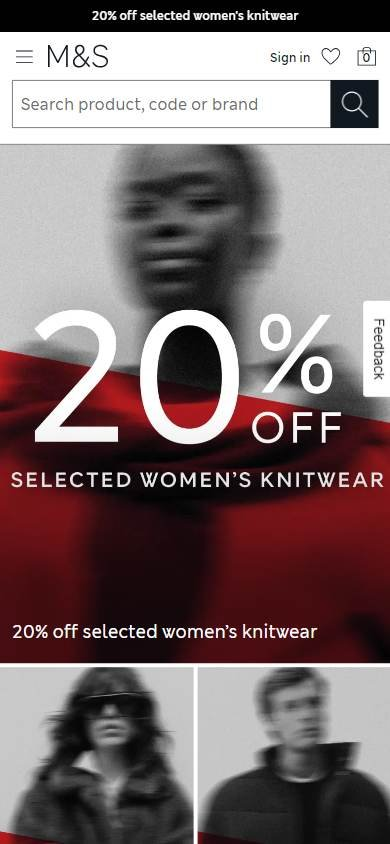

Tienda online que compite por calidad o marca
Los seleccionados
Los tres sitios más visitados de Referentes internacionales, según estadísticas de tráfico.
Pocas tiendas de España compiten por calidad o marca entre las más visitadas, así que te mostramos tres referentes internacionales.
En resumen: lo que hacen los líderes
La pantalla de inicio de cada uno



Estilo visual
Colores, imágenes, tipografía y cuánta información muestran.
Tu estilo visual debería…
- Blanco y negro como base y el color en las fotos.
- Botones negros en forma de píldora.
Lo que tienen en común: Paleta en blanco y negro, fotos de campaña enormes y botones negros: la marca habla a través de la imagen.
La paleta de cada uno
Medida sobre la primera pantalla. Los colores de marca salen del header; el resto muestra cuánto espacio ocupa cada color.
Así lo resuelve cada uno
Ficha comparativa
| Aspecto | Nike | Zalando | Marks & Spencer |
|---|---|---|---|
| Paleta | Muy acotada: blanco y negro | Acotada: blanco, negro + naranja del logo | Muy acotada: blanco y negro |
| Imágenes | Foto de campaña enorme | Foto de producto con modelo grande | Foto de campaña en blanco y negro enorme |
| Tipografía | Sin serifa, titulares enormes en mayúsculas | Sin serifa | Serifa en el logo, sin serifa en el resto |
| Densidad | Baja | Media | Baja |
| Botones | Negros en píldora | Negros en píldora | Negros |
Barra superior
La franja fina de arriba de todo.
Tu barra superior debería…
- Franja fina, negra o gris, con un beneficio de servicio: envío o devolución gratis.
Lo que tienen en común: Los tres usan una franja fina con un beneficio de servicio (envío o devolución gratis), sin colores fuertes.
Así lo resuelve cada uno

Ficha comparativa
| Aspecto | Nike | Zalando | Marks & Spencer |
|---|---|---|---|
| Existe | Sí, negra | Sí, gris clara | Sí, negra |
| Contenido | Envío gratis para miembros | Envío gratis y devoluciones | Promo del momento |
Header
La franja de arriba con el logo y los accesos.
Tu header debería…
- Header blanco con texto e íconos en negro; el color queda para las fotos.
- A la derecha: favoritos y bolsa (no «carrito»).
Lo que tienen en común: Headers blancos, casi sin color: el negro y el blanco transmiten calidad y dejan que las fotos de producto sean protagonistas.
Así lo resuelve cada uno

Ficha comparativa
| Aspecto | Nike | Zalando | Marks & Spencer |
|---|---|---|---|
| FondoIgual en todos | Blanco | Blanco | Blanco |
| Logo | A la izquierda, negro | Centrado, naranja | A la izquierda, negro |
| Colores | Blanco y negro | Blanco y negro + logo | Blanco y negro |
| A la derecha | Buscador redondeado, favoritos y bolsa | Idioma, cuenta, favoritos y bolsa | Ingresar, favoritos y bolsa |
Menú y categorías
Cómo se organizan las secciones.
Tu menú y categorías debería…
- Menú por público: Mujer, Hombre, Niños.
- Solo «Sale» en rojo; el resto en negro.
Lo que tienen en común: Las secciones se organizan por público (mujer, hombre, niños) y la única palabra en rojo es «Sale».
Así lo resuelve cada uno


Ficha comparativa
| Aspecto | Nike | Zalando | Marks & Spencer |
|---|---|---|---|
| Formato | Secciones por público (Hombre, Mujer, Niño/a) centradas | Pestañas por público arriba + categorías debajo | Fila de categorías por tipo de producto |
| Destacado en rojo | «SALE» | «Sale %» | — |
Primera pantalla
Lo primero que se ve debajo del header.
Tu primera pantalla debería…
- Una foto de campaña grande y cuidada, con muy poco texto.
- Si hay oferta, un solo número grande sobre la foto.
Lo que tienen en común: Foto de campaña grande y de calidad, con muy poco texto. La imagen vende, no el precio.
Así lo resuelve cada uno
Ficha comparativa
| Aspecto | Nike | Zalando | Marks & Spencer |
|---|---|---|---|
| Formato | Foto de campaña a todo el ancho | Foto de producto con modelo + texto al costado | Foto en blanco y negro a todo el ancho + oferta |
| Texto | Poco, tipografía enorme | Poco | Poco, «20% OFF» grande |